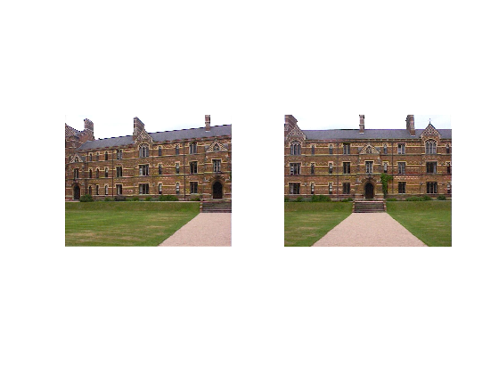
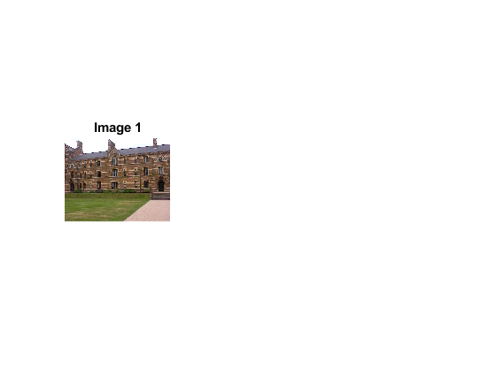
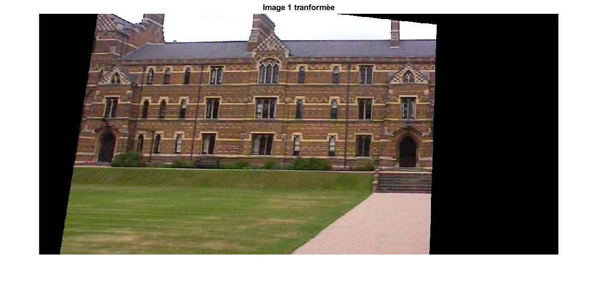
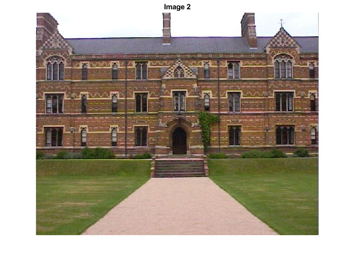
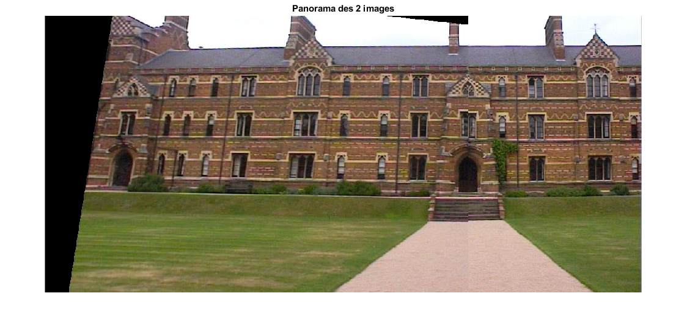

clc;
close all;
clear;
im1 = im2double(imread('keble_a.jpg'));
im2 = im2double(imread('keble_b.jpg'));
data = [[658,287,366,289] ; [642,360,347,361] ; [681,359,386,361] ; [342,56,50,39]] ;
[l,w]=size(data);
M=zeros(2*l,9);
figure()
subplot(121)
imshow(im1,[])
subplot(122)
imshow(im2,[])
for k=1:l
M(2*k-1,1)=data(k,1);
M(2*k-1,2)=data(k,2);
M(2*k-1,3)=1;
M(2*k-1,7)=-data(k,3)*data(k,1);
M(2*k-1,8)=-data(k,3)*data(k,2);
M(2*k-1,9)=-data(k,3);
M(2*k,4)=data(k,1);
M(2*k,5)=data(k,2);
M(2*k,6)=1;
M(2*k,7)=-data(k,4)*data(k,1);
M(2*k,8)=-data(k,4)*data(k,2);
M(2*k,9)=-data(k,4);
end
[U,S,V]=svd(M);
h=V(:,end);
h=reshape(h,[3,3])';
new_image1=vgg_warp_H(im1,h,'linear',[-500 720 1 568],1);
figure()
subplot(131)
imshow(im1,[])
title('Image 1')
figure(12)
imshow(new_image1,[])
title('Image 1 tranformée')
figure()
imshow(im2,[])
title('Image 2')
panorama =[new_image1(:,1:501+365,:) im2(:,366:end,:)];
figure()
imshow(panorama,[])
title('Panorama des 2 images')
    